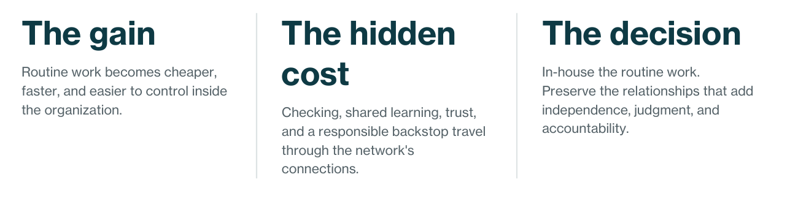
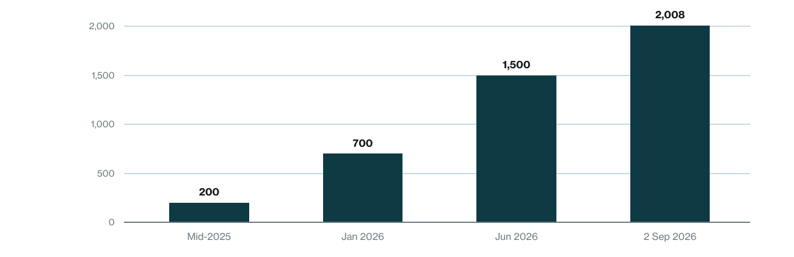
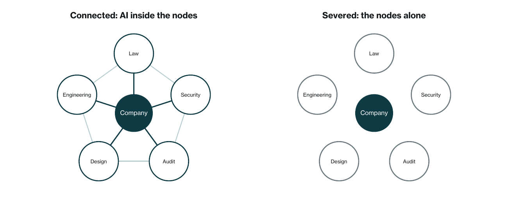

This is an insight paper, not primary research. It draws on published surveys, reporting, law, and public databases, attributed in the text and listed in the references. Survey figures are as stated by their publishers on the dates given in the references; database counts are as retrieved on the dates given. Figure 1 plots documented database counts. Figure 2 is a conceptual rendering. Where the paper draws a conclusion from that record, it says so: the closing argument is the paper’s own, not a result the record proves.
Artificial intelligence gives organizations a real opportunity to bring routine expert work inside: lower cost, faster turnaround, and more control. But an outside firm carries more than output across the boundary. It also carries checking, learning gathered across clients, independent credibility, and a backstop when the work fails. Those functions rarely appear on the first savings estimate.
The result is a network problem. Every organization buying expertise is also selling something of its own. If every node uses AI to cut its suppliers, the same logic returns through its customers. The better outcome, in this paper’s argument, is not refusing AI. It is using AI inside both companies and specialist firms, bringing routine work inward while preserving the connections that add independent capability and accountability.

1.The Network
Every organization buys expertise from other organizations. A hospital hires a law firm. A city hires an engineering firm. A software company hires an accounting firm, a security firm, and a design shop. The firms hire each other too.
This layer of business-to-business work exists for a simple reason. Expertise piles up where people do the same work all day for many different customers. A lawyer who writes employment contracts for two hundred companies gets better at them than a manager who writes one a year. And once expertise piles up somewhere, it gets sold. That is the whole model: concentrate, then sell.
The result is a network. Each organization is a node in it, a point connected to the ones it buys from and the ones it sells to. Every node is both customer and supplier. The bakery buys accounting and sells bread. The accounting firm buys software and sells accounting. Nobody designed this network. It grew because it worked: each node got to be good at one thing and buy the rest. This paper is about that layer, the buying and selling of expertise between organizations, and about what happens to it now.
2.The Severing
AI has given the nodes a new idea: maybe they no longer need each other.
The idea is easy to measure in its early form. In a survey published in March 2026 by FTI Consulting and Relativity, 87 percent of general counsel said their teams now use generative AI, up from 44 percent a year earlier. In research from the Association of Corporate Counsel, legal departments said plainly what they intend to do with it: bring work in-house and cut what they pay outside firms. More than half expect to rely less on outside lawyers. Those numbers measure adoption and intent. The cutting itself is only beginning to show up in spending, which is exactly why this is the moment to think it through.
What an aggressive cut looks like
The clearest public record of an aggressive cut and a recalibration comes from just outside the expert layer, and it is worth reading anyway. In February 2024, Klarna, a Swedish payments company, said its AI assistant had handled two-thirds of its customer service chats in its first month and was doing work equivalent to about 700 full-time agents. That was a workload equivalence, not a count of people dismissed, and human support did not disappear. Fourteen months later, in May 2025, its chief executive told Bloomberg that cost had been too dominant a factor in how the operation was organized, that the result was lower quality, and that the company was recruiting people so that a customer could always reach a human. The assistant stayed and kept growing, while Klarna moved toward a hybrid model preserving human access.
That is the severing in miniature: a node cutting back its connections because it believes AI can replace what came through them. Part of the belief is correct. AI really can do a growing share of what outside firms used to sell.
Two earlier Monderman insights cover the adjacent questions this paper will not repeat. Merit After the Machine examines how AI weakens the evidence institutions use to recognize skilled and conscientious work. From Tokens to Outcomes examines the economics of enterprise AI and the intermediary layer forming between institutions and foundation-model providers. This paper asks a narrower question: what a node gains when it cuts itself loose, what it loses, and what happens if everyone does it at once.
“AI improves what a node knows. It cannot replace what a node is connected to.”
3.What the Cut Wins
Honesty first: severing has real benefits, or nobody would try it.
The work gets cheaper. Routine contracts, research, first drafts, standard designs, basic analysis: AI can produce a growing share of this work inside the company, often at lower direct cost. The work gets faster, with no waiting on a vendor’s schedule. And the company gets more control. Its information can stay closer to home, subject to where the model runs and to the AI vendor’s terms, its priorities come first, and nobody bills by the hour.
For routine work with quick feedback, those benefits are real, and this paper does not argue against taking them. A first draft that a senior person rewrites, a prototype that gets tested, an analysis a meeting will pull apart: mistakes in that kind of work get caught in the next step anyway. That kind of work can come inside, and much of it will.
Not every outside relationship deserves to be preserved. Monderman’s Compensatory Systems showed how external actors can sometimes preserve output by routing around internal dysfunction, valuable in the moment but dangerous when the workaround becomes the operating model. The distinction is between a connection that adds independent capability, meaning checking, shared learning, credibility, or accountability, and one that merely compensates for an internal failure that should be repaired. AI should help leaders tell those relationships apart.
4.What the Cut Costs
The costs show up in four places, and they are easy to miss because none of them appears on the first spreadsheet.
First, the checking. AI’s output looks finished whether it is right or wrong, and telling the difference takes someone who knows the field. There is a public record of what inadequate verification produces. A researcher named Damien Charlotin keeps a database of court decisions in which a court found, or implied, that a party had relied on AI-invented citations or quotes. By the author’s readings it held about 200 decisions in mid-2025, passed 700 in January 2026 and 1,500 in June, and on 2 September 2026 it showed 2,008. Courts catch some of these because someone in the process checks, often the other side’s lawyer or the judge. The database does not identify who detected each error or whether an outside firm would have prevented it; it records cases in which pre-filing verification failed and the problem reached judicial attention. Most work has no opposing lawyer and no judge. A bad contract, a wrong tax filing, or a flawed policy can sit there, wrong, until the day it matters. Cutting the outside firm does not change how often AI is wrong. It removes one of the people who might have caught it.

What the spreadsheet misses
Second, the shared learning. An outside firm sees the same problem at many companies, so each client gets the benefit of all the others' bad days. The security business shows what that is worth. Mandiant, a security firm now owned by Google, investigates network break-ins for a living. In its M-Trends 2026 report, covering its 2025 investigations, organizations had first detected the intrusion themselves 52 percent of the time. In 34 percent of cases an outside entity told them: law enforcement, a computer emergency response team, a security company, or an industry partner. In the remaining 14 percent the attackers told them, usually with a ransom note. So in about a third of serious break-ins, finding out you have been robbed is something the network does for you, and in another seventh the news comes from the thief. An isolated node learns only from its own disasters, and sometimes not even from those.
Third, the trust of everyone else. A company’s word about itself is worth very little, and the business world is built around that fact. Investors require audits from outside accountants. Customers ask for security reports that only an outside examiner can issue. Company law protects directors who rely in good faith on expert advice: Delaware’s statute says so, and Delaware’s courts have faulted boards that approved a deal without informing themselves, as in Smith v. Van Gorkom. Insurers demand outside assessments before they write a policy. AI makes a company’s self-checks cheap and fast, but a self-check was never what anyone else wanted. A node that isolates keeps producing answers about itself. It just loses everyone who was willing to believe them.
Fourth, the backstop. When an outside firm’s work fails, there is someone to hold responsible: a firm with insurance, a license, a contract, and a name to protect. When in-house AI work fails, the company absorbs the loss, and how much of it the AI vendor shares depends on two contracts: the professional firm’s engagement, which typically carries a duty of care and professional liability insurance, and the vendor’s terms. OpenAI’s standard business agreement, for example, makes the customer responsible for evaluating the accuracy of output, provides the service largely as is, and generally caps liability at the fees paid during the prior twelve months, subject to specified exceptions. Terms vary by vendor, and larger customers negotiate them. So severing does not remove the dependence on outsiders. It tends to trade an outside firm that answers for its work for an outside software seller whose standard contract answers for less.
The first of these costs arrives quickly. The other three arrive slowly, and that is what makes them dangerous. A node can feel fine for years while its learning, its credibility, and its protection quietly drain away.
5.The Second Cut
The logic comes back
There is one more consequence, and it is the one severing companies think about least. Every node that cuts off its suppliers is itself a supplier. The company dropping its law firm sells something to customers of its own, and those customers are running the same numbers about it. The logic of severing does not stop where you would like it to stop.
Taken all the way, that logic dissolves the network: each organization trying to be everything to itself, all with the same AI, none learning from the others, none checking the others, none trusting the others. That is not a stronger position. It is a thousand isolated boxes, each one confident, none of them checked.
Everyone optimizing in the same direction at once has gone badly before. In the 1990s and 2000s, many companies pushed outsourcing and offshoring hard, and when supply chains came under stress, some of that work was brought back. The analogy is imperfect. Outsourcing moved work to other nodes, while severing removes them, and the record of bringing work back is mixed. But the shape is the same, a rule followed past its stopping point, and overdoing it in the other direction may be corrected the same way.
Monderman has described this broader pattern as terminal fidelity: a rule that works within limits becomes destructive when it is followed past its stopping point. AI-enabled in-housing is useful while it removes avoidable cost and delay. Its stopping point arrives when the next cut begins removing independent checking, shared learning, credibility, and accountability faster than it removes waste.
Meanwhile, the oldest outside institutions keep working. Company books have been checked by outsiders for well over a century, and ships have been classed for insurers since 1764, when a society that underwriters, brokers, shipowners, and merchants had formed at Lloyd’s coffee house in 1760 printed its first Register of Ships, because nothing yet has made "trust me" an acceptable answer between strangers.
“A rule that works within limits becomes destructive when it is followed past its stopping point.”
6.Staying Connected
Put AI into the nodes
The alternative to severing is not refusing AI. It is putting AI into the nodes instead of using it to replace them.
An audit firm with AI can check deeper for the same fee. A security firm with AI can watch more networks and warn everyone faster. A law firm with AI can answer in hours instead of weeks. The same technology that tempts a company to cut these firms off can make each of them better at the exact thing the company was buying. And the company’s own people get the same upgrade. A small inside team with AI, connected to strong outside firms with AI, can be stronger at both ends than either one alone.
The network will not come through unchanged, and this paper does not pretend otherwise. AI will shrink some nodes, kill some, and create new ones. The routine work that once paid many bills is going away, and the firms that survive will be selling judgment, independence, and accountability rather than paperwork. That is disruption, and it is already underway. It is also normal: the network has always replaced nodes that stopped earning their place.
But a network reorganizing is not a network dissolving, and here the paper states its argument rather than a result the record above proves. Organizations are likely to do better as good nodes in a working network than as isolated boxes trying to be everything. The gains from AI are real in both versions. In the connected version they can compound, because every node’s improvement can reach every other node. In the isolated version, each node improves alone and gives up the checking, the shared learning, the trust, and the backstop that the connections carried.

What a connection is worth
None of this is an argument about protecting jobs. That question matters, and it belongs to a different paper. This one is arithmetic and record, and the arithmetic is the paper’s. A node is valuable for what it knows and for what it is connected to. AI improves what a node knows. It cannot replace what a node is connected to.
01 Checking. Expert review that catches errors before they sit, unnoticed, until the day they matter.
02 Shared learning. The benefit of problems seen across many companies, rather than one organization’s disasters alone.
03 Trust. Independent assurance that customers, investors, insurers, and other outsiders are willing to believe.
04 Backstop. A firm with a contract, license, insurance, and reputation that answers when its work fails.